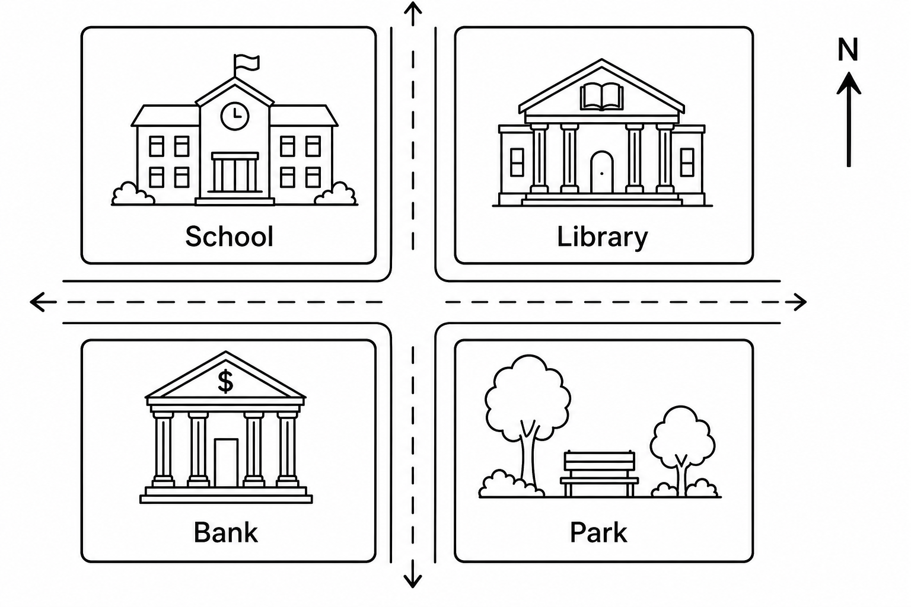

七年级下册英语模拟试卷
人教版方向 · 笔试部分 · 满分 120 分 · 建议用时 100 分钟
注意：本卷共五大题，满分 120 分，考试时间 100 分钟。请将选择题答案写在题号旁，书面表达写在规定区域内。
一、单项选择 共 20 题，每题 2 分，共 40 分
- This is my friend. ______ name is Tom.
- There ______ a book and two pens on the desk.
- My sister often ______ her homework after dinner.
- ______ do you go to school? By bike.
- Listen! The students ______ English songs.
- We have math ______ Monday morning.
- I like pandas ______ they are cute.
- The bank is ______ the library and the supermarket.
- Please ______ quiet in the reading room.
- I can play ______ chess, but I can't play ______ guitar.
- It takes me twenty minutes ______ to school.
- My mother is strict ______ me, but she is kind.
- There are ______ people in the park on weekends.
- What does your father look like? He ______ tall and thin.
- Would you like some noodles? ______.
- My brother can ______ Chinese kung fu.
- It is raining, so we ______ stay at home.
- There ______ any milk in the fridge.
- What size bowl of noodles would you like? ______.
- Tom ______ his grandparents last weekend.
二、完形填空 共 5 题，每题 2 分，共 10 分
It is Saturday morning. Lucy and her brother Jack go to the old people's home with their classmates. They want to do something useful. Lucy can sing, so she sings two songs. Jack is good at drawing, and he draws a picture for an old man. Their classmates clean the rooms and read newspapers to the old people. At noon, everyone feels tired but happy.
- Lucy and Jack go there on ______.
- They go there with their ______.
- Lucy can ______.
- Jack draws a picture for ______.
- The students feel tired but ______.
三、阅读理解 共 10 题，每题 3 分，共 30 分
Mike lives near a small zoo. On Sundays, he often goes there with his cousin. His favorite animal is the elephant because it is smart and friendly. But he doesn't like tigers. He thinks they are scary. The zoo opens at 9:00 a.m. and closes at 5:00 p.m.
Anna is a middle school student. She has many rules at home. She must get up at 6:30. She has to make her bed before breakfast. After school, she must finish homework first. She can't watch TV on school nights. Anna thinks rules are useful, but sometimes she wants more free time.

- Where does Mike live?
- Why does Mike like elephants?
- How long is the zoo open every day?
- What must Anna do before breakfast?
- Can Anna watch TV on school nights?
- Where is the library?
- What is across from the bank?
- How can you get from the school to the park?
- Which place is south of the school?
- Which place is east of the school?
四、词汇与语法 共 10 题，每题 2 分，共 20 分
- 用所给词适当形式填空：Look! They ______ (play) basketball.
- 用所给词适当形式填空：My brother ______ (brush) his teeth at 7:00.
- 句型转换：She can swim. 改为一般疑问句。
- 句型转换：The school is behind the park. 对画线部分提问。
- 翻译短语：遵守规则
- 用所给词适当形式填空：It ______ (be) sunny yesterday.
- 用所给词适当形式填空：There are many ______ (child) in the park.
- 句型转换：He went to the museum last Sunday. 改为否定句。
- 翻译短语：准时
- 根据汉语补全句子：My school is ______ ______ the bank. 我的学校在银行对面。
五、书面表达 共 20 分
请以“My School Day”为题，写一篇 60 词左右的短文。内容包括：起床时间、上学方式、最喜欢的学科、放学后的活动和一条学校规则。